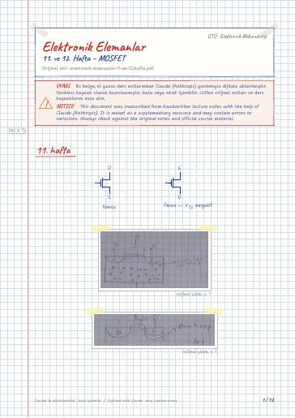
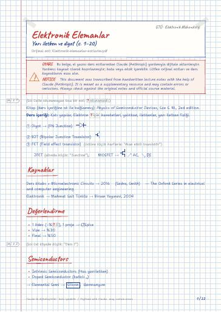
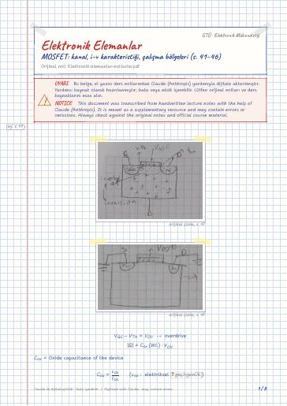

11. ve 12. Hafta – MOSFET
11. hafta · Triode · Sat · Deep triode · Örnek · 12. hafta
Electronic Devices — lecture notes, past exams, and projects at Gebze Technical University (GTU) Electronics Engineering
Yarıiletken fiziği, pn eklemi ve diyotlar, BJT ve MOSFET'in yapısı, çalışması ve kutuplanması.
Semiconductor physics, the pn junction and diodes, and the structure, operation and biasing of BJTs and MOSFETs.
Bu sayfada: Ders Notları Dijital Notlar (LaTeX) Çıkmış Sorular Projeler Kaynak Kitaplar
El yazısı notların LaTeX ile yazılmış, aranabilir dijital versiyonları. Şablon ve derleme: latex-sablon.

11. hafta · Triode · Sat · Deep triode · Örnek · 12. hafta

Kaynaklar · Değerlendirme · Semiconductors · Hole (Elektron boşluğu) · Recombination (Rekombinasyon) · Free carriers (Serbest Taşıyıcı)

Rectifier circuits · The bridge rectifier · Block diagram of a dc power supply · The rectifier with a filter capacitor: The peak rectifier · Limiting and Clamping Circuit · The clamped Capacitor or DC restorer

Applying some v_DS · Table 5.1 (266)Table 5.1 (266)
Derste kullanılan kaynaklar (kitapların kendisi telif hakları nedeniyle yayımlanmaz):
Devre Teorisi I · Devre Teorisi I Laboratuvarı · Diferansiyel Denklemler · İngilizce · Nümerik Analiz · Türkçe I
GitHub'da klasörü aç← 3. Dönem
Ders materyallerinin hakları ilgili öğretim üyelerine ve GTÜ'ye aittir; eğitim amacıyla paylaşılmıştır.